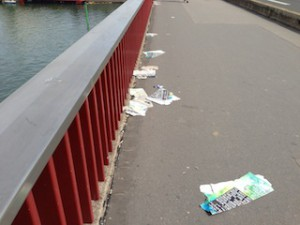

(( Scroll down the page to see the English text. ))
夏も終わりに近づく頃、毎年毎年気が重ーくなる。
そう、近くの大きな公園でやる野外ロックコンサート。金、土、日と３日間、昼からなんと夜中の０時半までノンストップでなり続ける騒音です。ボンボンボンと床や壁が響き、暑くても窓を空けられず、テレビの音も聞こえません。
去年、市に苦情のメールを頑張ってフランス語で書いたのですが、返ってきた返事は、苦情は何件も来ているがこのコンサートの責任者は市でなくてConseil Regionalになるので、そちらにメールを送るとのこと。当然なーんにも反応なし。完全に無視されてまた一年が経ち、夜の０時半までずーっと騒音の中です。メインのコンサートは０時半だけど、その後は音量を下げて音楽を流しているようで深夜１時過ぎくらいまで遠くで音が聞こえます。もっと近くに住んでいる人は大変ですね。頭がおかしくなります。
若い人は昼間出かけていればいいけれど、お年寄りの人は本当に気の毒でなりません。ご近所のおばあさんも文句を言ってらっしゃいました。メールにも“住人の中には小さな子供、お年寄りもいるし、病人の人だっているかもしれない。開催者はそのことを理解しているのか。通常夜２２時以降の騒音は禁止されていて警察が呼べるのに、なぜこのコンサートは許されるのか” と質問もしたのですが返事はなし・・・。
だいたい住民に何も説明もなくこんなイベントを企画するConseil Regionalって何する機関なのか？？？必要なの？？？
もちろんメデイアも協賛しているからこのイベントを応援してますよ。ロック・アン・セーヌ コンサート大成功！みたいな感じで。怖いのはこのエゴイズムですね。自分たち利益になれば何でもありで絶賛する。決してネガティブな面は伝えない。コンサートに行っている人間も同じく。自分のことで頭がいっぱいでしょう。考えが狭い。野外でこれだけの音を深夜に出すことによってどれだけの人が困るのか、森に棲む動物たちにも悪影響だと思わないのかな・・・。ものすごい振動です。
フランス人も同じことを思ってますよ。一番下にあるサイトで詳細が分かります（フランス語ですが）。Conseil Regional、たーくさんお金をもらっているようです。

一週間経っても、後片付けもできてない。コンサートのポスターが散らかったまま。
きっとこのような問題はいろんな都市で起こっているはず。ということで英語でも書いてみました。
Every year, at this time of the year I start to feel very down.
It’s the open-air concert held in the nearby park. It lasts three days, Friday, Saturday and Sunday, and the terrible noise continues from the noon to 0:30 am, nonstop. The floor and the wall vibrate because of boom boom noise reaching from the park. We can’t open the windows even if it’s hot, nor can we hear the TV. Even after the concert, I hear some music playing in a distance until past one o’clock. I can’t imagine how people living closer to the park resist this frustrating event. And in the morning the music starts again soon, 10 o’clock. You see how terrible it is?
Last year, I took a lot of pains to write an e-mail in French to the mayor, but his response was not encouraging. In his email he explained that the concert was not organized by the city but by Conseil Regional (wider than a city) and that he would forward the mail I sent to Conseil Regional. Anyway I learned that I was not only one who made a complain. Since then, as I expected, there has been no response from them, and a year has passed. My effort was completely ignored. I’m a foreigner, but I’m paying a lot of tax. I do contribute to the society. But still ignored. Imagine other French people who made a complaint like me. They must feel really discouraged.
Young people are able to escape from the noise during the day by going away from the area, but I’m very sorry for old people. Not surprisingly, an old lady, who lives alone next door, was complaining about the noise. I wonder how stressful it is to be surrounded by the disturbing noise all day long. It is like a torture. In the e-mail I wrote to the mayor I asked whether the organizers were aware of the fact among the residents there were children, old people and even sick people. “We call the police if we are disturbed by unpleasant noise after 10 o’clock, but why is this concert permitted”, I also added. Well, no news…
First and the foremost, how could they organise such an event without asking the residents. They are either uncaring or aware that they will face opposition.What is Conseil Regional? Is it really useful?
The mass media are also willing to support this event because they are sponsoring it too. They rave about it as if it were such a great success with no opposition. They look they are doing only good, never troubling anyone. This shows egoism. Whatever it is, they speak very highly of it, if it is profitable for them. They never report anything inconvenient to them. They are preoccupied with their profit, and so do the people who attend the concert. They lack conscience, and this is why they don’t see there are people who suffer from the noise or that there are animals living in the woods most likely disturbed by deep-sound vibration.
See this page, if you understand French. Well, it seems Conseil Regional receives a lot of money…
Demande de bilan pour le festival Rock en Seine
I know such a concert can be seen everywhere in the world. It’s exciting to some certain people but I hope more people will become aware that there are those who don’t appreciate it.